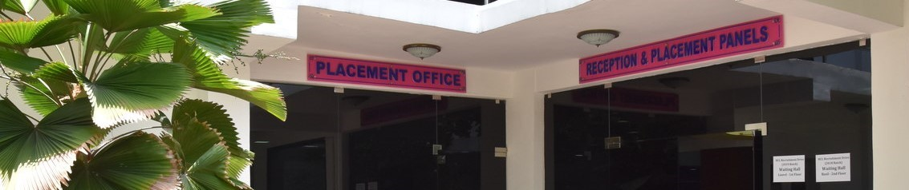

About us
Our College
- JP Institute of Technology is having 29 years of successful academic reputation offering 11 UG programs and 7 PG programs with a current total intake of more than 1570 students per year.
- Since inception, JP Institute of Technology is consistently placed among the Top 10 institutions in terms of number of ranks. So far 1541 ranks including 57 Gold medals and 55 Silver medals have been secured by students. The college has been in 1st Place in terms of highest numbers of Anna University ranks, three times (2010, 2019 and 2021) among 500 affiliated institutions under Anna university, Tamil Nadu.
- The College is continuously being ranked by in National Institutional Ranking Framework (NIRF) since 2017.
- Our institution is ranked in 'Elite Band' at National level Atal Ranking of Institutional Innovations and Achievement (ARIIA - 2021).
- Accredited with A+ grade by securing 3.46 on a scale of 4.00 by National Assessment and Accreditation Council (NAAC).
- Since 2020, our institution attained 'Autonomous Status' under Anna university with 09 UG courses are accredited periodically from 2003
- Seven of our departments are recognised as 'Research Centres' by Anna University for research scholars to pursue Ph.D./ MS by research, currently 174 Research scholars are pursuing their research. From these research centres 149 number of scholars have been awarded Ph.D degrees.
- Recognition as 'Scientific and Industrial Research Organisation' (SIRO) since 2014 by DSIR, Government of India.
- The college is having a good number of research publications with a h-Index of 55 in Scopus and 50 in Web of Science index.
- Recognised as the 'Best Exam Preparatory Centre' for conducting Business English Certificate (BEC) examination by Cambridge ESOL for the past eight years in India & one among 25 South Asia Best Preparatory Centres.
- Received FIST grant of Rs. 71 Lakhs from Department of Science and Technology, Government of India.
- Consistently awarded “National Employability Award” every year since 2017 by Aspiring Minds.